1概览
在 Dicey Devices（骰子装置）中，你将指挥机器人、经营实验室，并依靠忠实助手 Igor（伊戈尔）来建造并升级你的死亡射线，把对手一个个轰到失能。不过要小心——失能的玩家仍可恢复健康，并用他们自己的死亡射线向你复仇！
本游戏没有玩家淘汰：失能时你只会失去回合中的部分环节，甚至还有机会复活。从起始玩家开始顺时针进行，每位玩家依次完成六个阶段。当除一名科学家外的所有人都失能时，游戏结束；最后站立的疯狂科学家获胜！
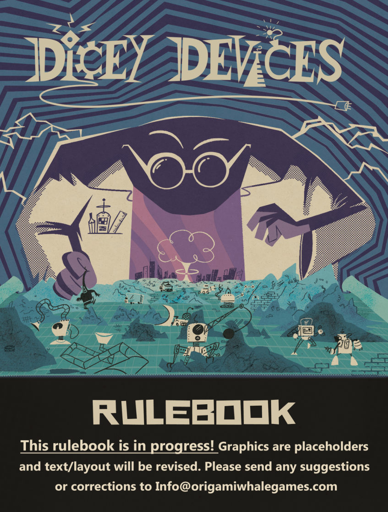
回合六阶段
- 复活阶段（Revive）：若已失能，可尝试复活角色。
- 轰击阶段（Blast）：若死亡射线已激活且未失能，可向目标开火。
- 实验室阶段（Lab）：激活你的实验室，获取资源与卡牌效果。
- 收集阶段（Collection）：所有符合条件的玩家从已激活的废料场区域中收集。
- 部署阶段（Deployment）：将可部署机器人送入废料场。
- 整理阶段（Cleanup）：补充空缺的区域卡牌，并可重新整理实验室。
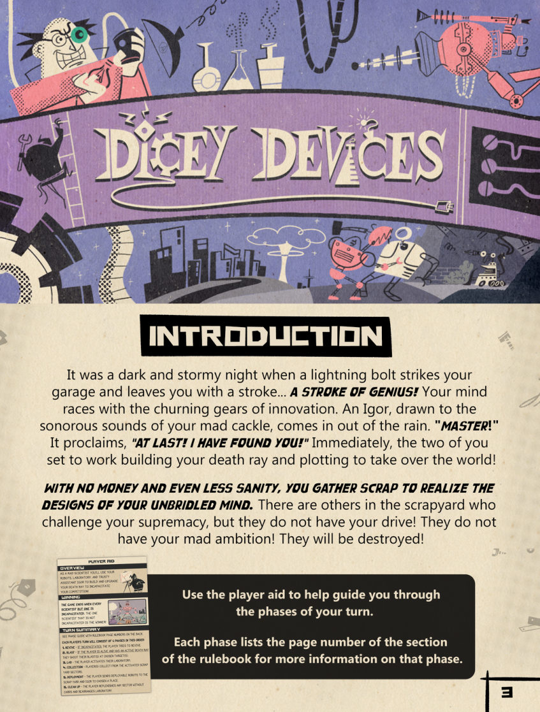
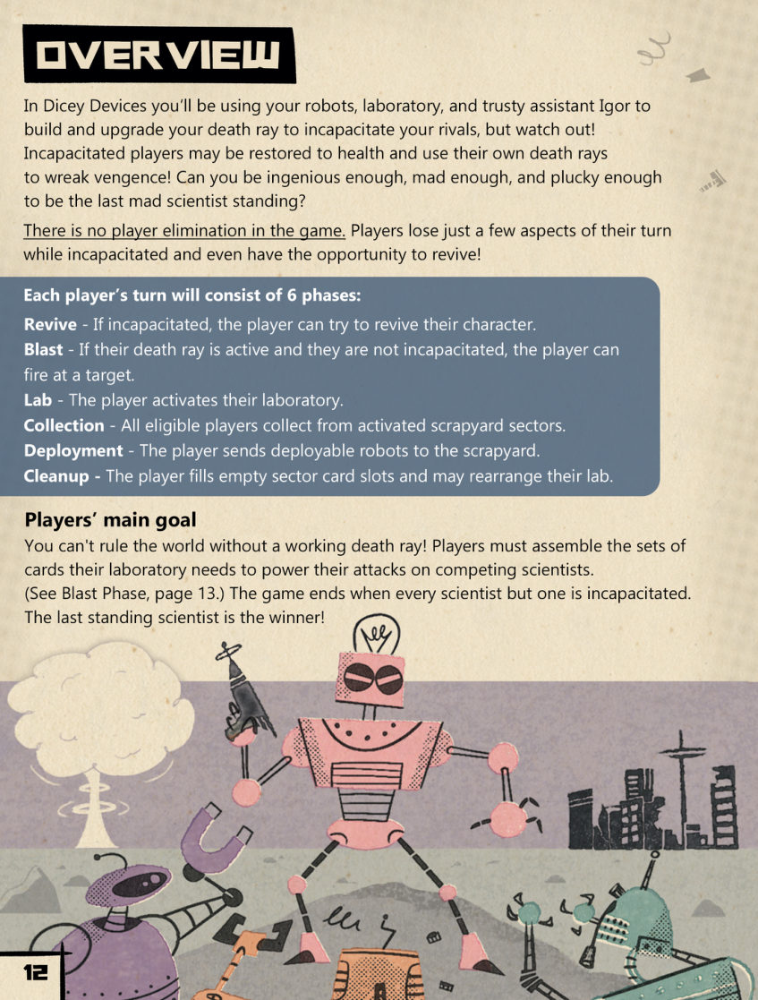
2组件
玩家个人板，含废料轨、未激活/可部署机器人区、角色位、伊戈尔 栖木、蓝图位、银行槽、装置区 1–9、机械区 10–12 与充能格。
中央公共版图，含 6 个区域、区域卡牌槽、废料选项与废料顶点。
放置死亡射线、记录套装数量与模块，并查看轰击说明。
2 颗实验室骰子（D6，粉色/蓝色）、2 颗轰击骰子（D6，红色/黄色）、1 颗核弹骰子（D12，白色）。
四色，每色 10 个（蓝色、粉色、红色、黄色）。
每色 1 个。
每色 1 个，可翻转选择产出资源。
每色 1 个，建造后竖立。
每色 1 个，在废料轨上记录废料数量。
绿色小方块，用于触发机械区能力。
白色小方块，标记已完成的套装。
掷出对子时放置在废料场区域上。
进阶内容（详见第 8 节），首次游戏可略过。
6 角色卡、10 原型装置卡、7 特殊装置卡、7 事件卡、12 起始装置卡、51 基础装置卡、5 独特装置卡、15 进阶装置卡、3 万能装置卡、15 增强卡、15 死亡射线模块卡。
4 张玩家辅助卡、3 个模块指示物、1 个玩家起始标记。
18 张单人卡、7 个角色剧本、1 块双面敌方实验室版图、8 个角色指示物。（本规则书仅含多人模式）
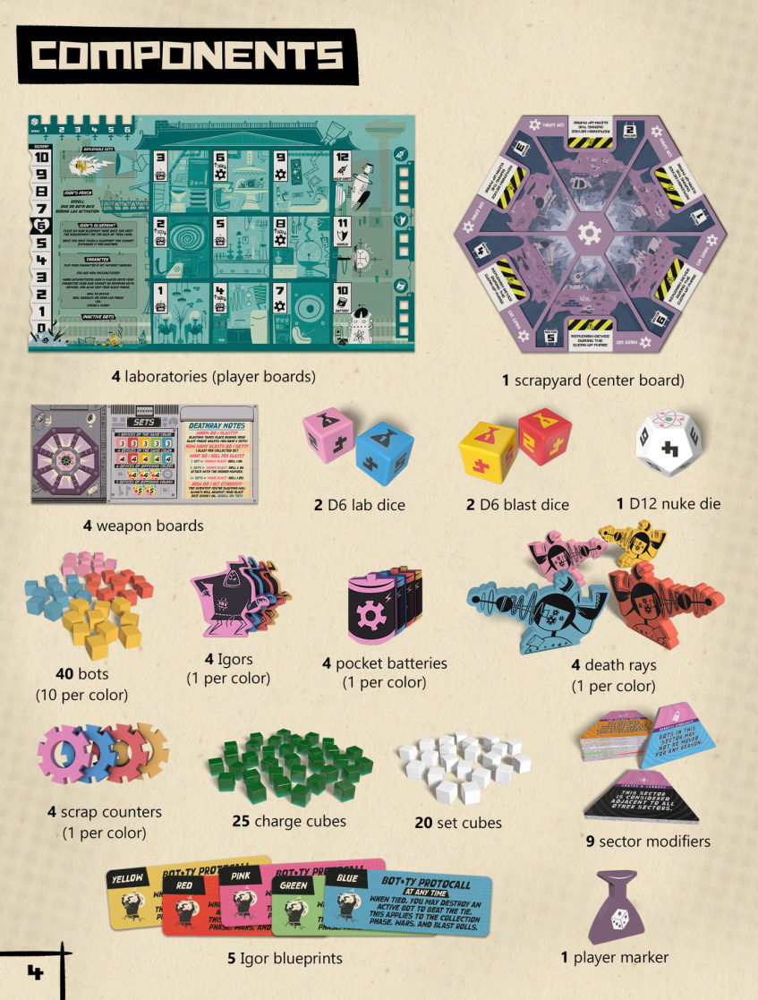
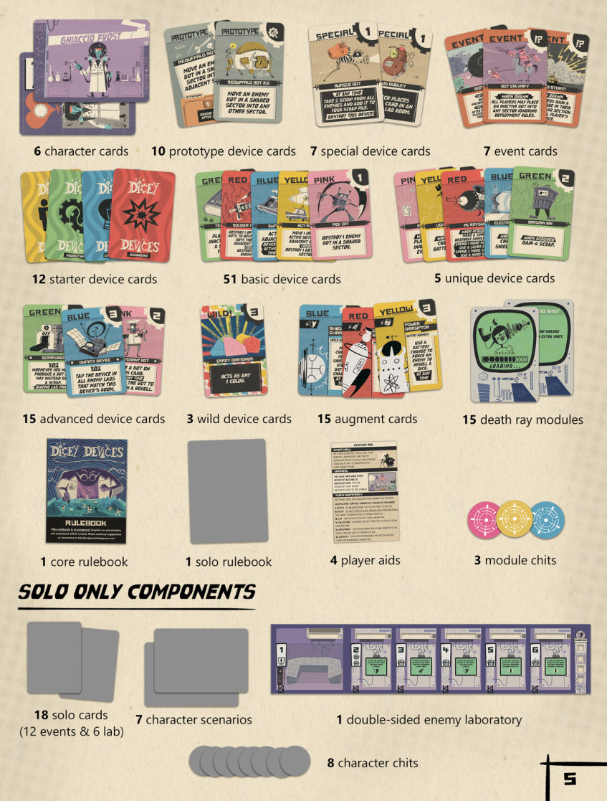
3版图详解
实验室版图（玩家板）
- 废料轨：记录你囤积的废料数量。
- 未激活机器人区：被回收或摧毁的机器人通常回到这里。
- 角色位：放置角色卡，正面朝上；失能时翻面。
- 伊戈尔 蓝图位：游戏中获得蓝图后放置于此。
- 伊戈尔 栖木：伊戈尔 在此时，你可在实验室阶段重掷一颗或两颗骰子。
- 可部署机器人区：生产后的机器人通常到这里。
- 银行槽：放置骰子与机器人以“储备”数值，供后续掷骰使用。
- 实验室区域指示：标明区域编号及其产出的资源。
- 装置区 1–9：放置装置卡（不含增强卡）。
- 机械区 10–12：放置增强卡，类型需与区域对应。
- 充能格：获得充能方块后放在这些格子里。
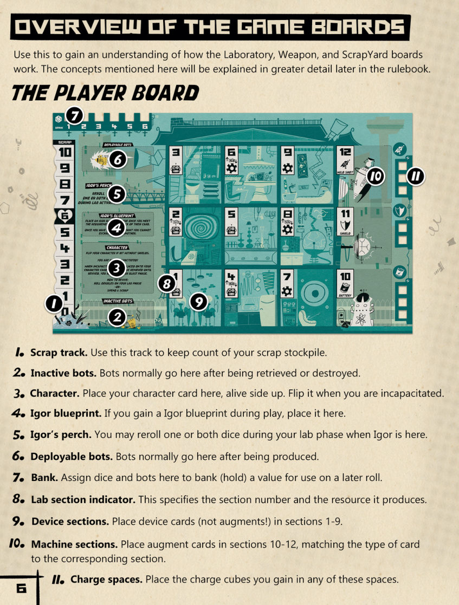
武器板
- 死亡射线垫：将死亡射线侧放于此，表示尚未建造；建造后竖立。
- 套装追踪区：每当你凑成一种颜色套装时，放一个套装方块于此。
废料场版图
- 区域指示：标明区域编号 1–6。
- 区域空间：放置机器人与 伊戈尔，以收集废料或卡牌。
- 区域卡牌槽：放置可用废料购买的卡牌。
- 区域废料选项：表示玩家可改为获得 1 废料。
- 废料顶点：玩家可将 伊戈尔 置于此获得 1 废料。
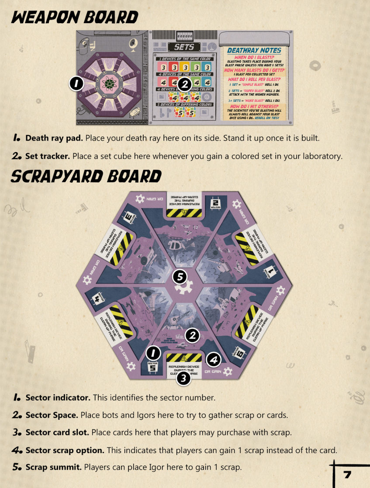
4游戏准备
个人准备
- 每位玩家选择一种颜色，拿取该色的实验室版图、10 个机器人、伊戈尔 米宝、便携电池、废料计数器与死亡射线。
- 选择任意角色卡，正面朝上放在角色位。角色无特殊能力；你的特殊起始能力由原型卡决定。
- 将 伊戈尔 米宝放到 伊戈尔 栖木上。
- 将便携电池放在区域 1 的指示物上，齿轮面朝上，盖住当前资源。可在实验室阶段开始时移动/更换。
- 从 10 个机器人中拿 7 个放入未激活区，3 个放入可部署区。
- 将废料计数器放到废料轨的 “4” 上。废料即你的货币。
- 洗匀所有原型卡，每人发 2 张；选择 1 张保留，弃除另 1 张。将选定的卡以 1.0 面朝上放在实验室区域 1。
- 将起始卡按背面分成 4 叠，每叠 3 张。每位玩家选择一叠，将其卡片放到任意一行最左侧的空区域中。首次游戏建议放在区域 2、4、5。
2 人游戏：只使用标有 “2/3/4” 的两张起始卡，移除该叠的第三张。 - 每人拿 3 个绿色充能方块，分别放在区域 10、11、12 的底部充能格中。
2 人游戏：双方开始时都在区域 11 放 2 个护盾充能。 - 每人发 1 块武器板，放在个人版图左侧或上方显眼处。
- 将你颜色的死亡射线侧放在武器板左侧，表示武器尚未激活。
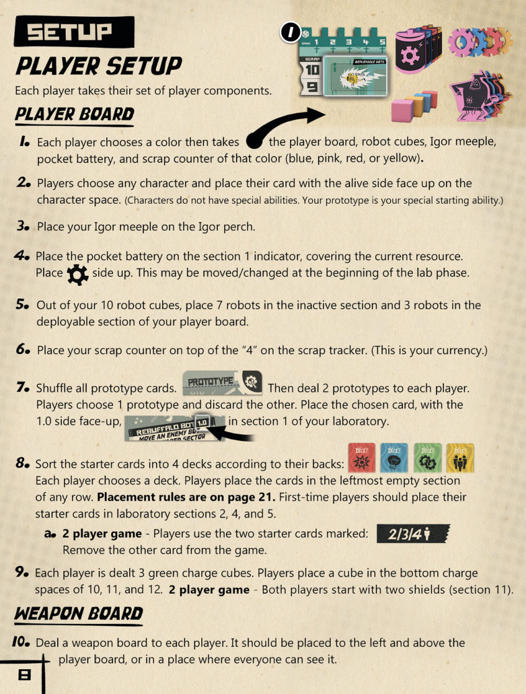
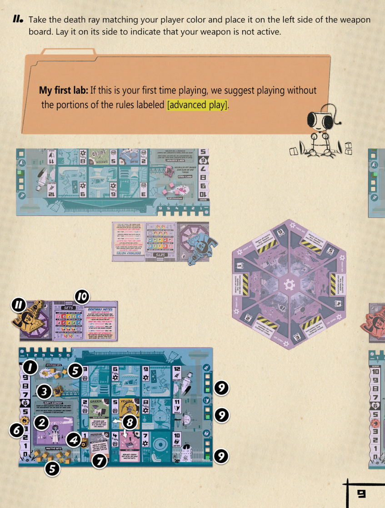
公共准备
- 决定起始玩家：每人掷 1 颗 D6，点数最高者获胜；平局重掷。
- 将玩家起始标记与实验室骰子交给起始玩家。
- 将轰击骰子与核弹骰子放在大家都能拿到的地方。
- 将除原型卡外的所有装置卡、增强卡、事件卡洗成一副公共牌库（即"游戏牌库"）。
进阶玩法：若使用进阶装置卡，将其全部混入游戏牌库。进阶卡两侧有星号标记。
- 将废料场放在桌面中央。
- 从洗好的游戏牌库中，在每个废料场区域的卡牌槽放 1 张卡。若抽到“抽到即触发（when drawn）”的事件卡，先放一边，重新抽一张；所有区域补充完毕后，将这些事件卡洗回牌库。
- 从起始玩家开始，每位玩家按自己的玩家顺位从未激活区部署相应数量的机器人到废料场。
例如：起始玩家放 1 个，第二位放 2 个，依此类推。部署必须遵循部署规则。 - 将充能方块供应区与套装方块供应区放在大家都能拿到的地方。
- 洗匀区域修正板块，面朝下放置。
进阶玩法：将 伊戈尔 蓝图放在大家都能拿到的地方。
- 洗匀死亡射线模块卡，面朝下放在套装方块旁。
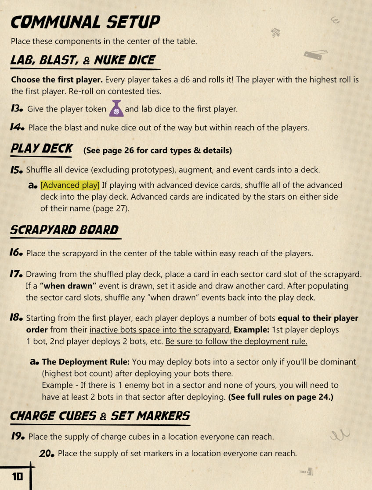
5回合阶段
从起始玩家开始顺时针进行，每位玩家按顺序完成以下六个阶段。
5.1 复活阶段（Revive Phase）
失能时，你无法部署 伊戈尔 或操作死亡射线，但仍可执行阶段 3–6 中的其他行动。
伊戈尔 会尝试从失能科学家一侧的“手术圈（Operating Circle）”将你复活。你有两种方式：
- 掷 2 颗实验室骰子：出现对子（两颗点数相同）即复活。
- 成功：伊戈尔 把你电醒！继续进入轰击阶段。
- 失败：你仍可支付 6 废料复活；否则直接进入实验室阶段。
- 支付 6 废料复活：可以先用骰子尝试对子。
- 支付 6 废料：伊戈尔 给你造了一颗废料心脏！继续进入轰击阶段。
- 不支付：保持失能，直接进入实验室阶段。
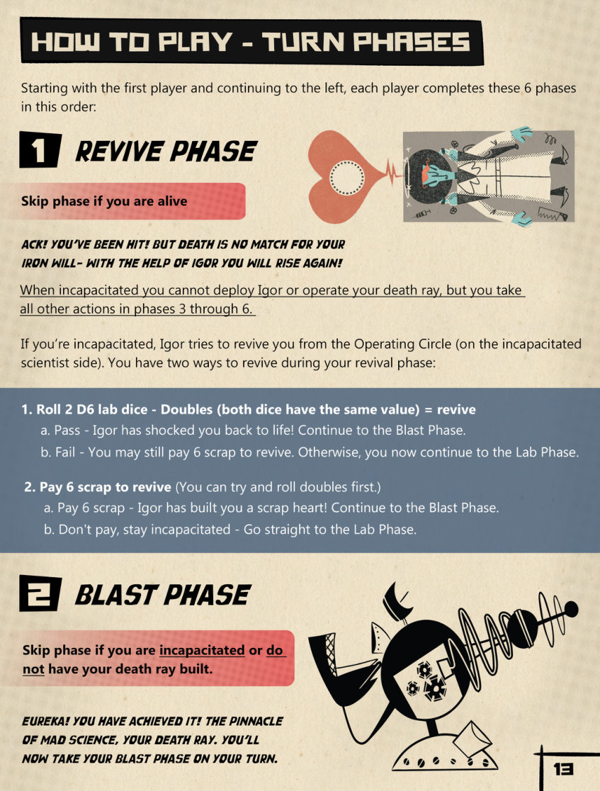
5.2 轰击阶段（Blast Phase）
在轰击阶段，你有机会用死亡射线令其他疯狂科学家失能。死亡射线的轰击威力和模块数量，取决于你实验室中当前拥有的颜色套装数量。
轰击步骤
- 指定一名玩家为目标，将死亡射线转向他们。
- 根据你拥有的套装数量，掷对应数量和类型的骰子。目标玩家掷 1 颗 D6 进行防御掷骰。
- A. 你掷出更高，且目标无护盾：命中，目标失能。失能玩家翻面角色卡，并将自己的 伊戈尔 放到手术圈（失能科学家一侧）。
2 人游戏：被击中的玩家可立即尝试复活；若复活失败，游戏结束。 - B. 你掷出更高，且目标有护盾：目标从护盾充能格（区域 11）失去 1 个充能方块。
- C. 平局：重掷。
- D. 你掷出更低：未命中目标。
- A. 你掷出更高，且目标无护盾：命中，目标失能。失能玩家翻面角色卡，并将自己的 伊戈尔 放到手术圈（失能科学家一侧）。
- 你可在轰击阶段任意时刻使用死亡射线模块。
- 准备好剩余的轰击次数后，从步骤 1 开始重复。（可指定新目标。）
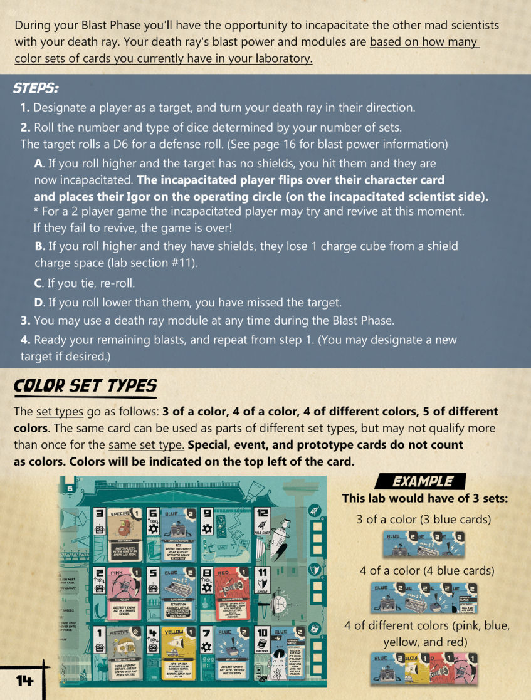
本补遗衔接轰击阶段步骤 1 与 2D。
- 献祭狂怒方块：在攻击或防御掷骰前，你可以献祭任意数量的狂怒方块，每献祭 1 个为本次掷骰结果 +1。新结果不能超过 6，即使是在核弹骰上；超出部分浪费。
- 获得狂怒方块：每次你轰击另一名玩家但未命中时，获得 1 个狂怒方块。命中护盾仍算命中，不获得狂怒方块。
- 狂怒方块可在轰击阶段通过死亡射线模块的使用而获得或使用。
- 本回合后续轰击中即可使用刚获得的狂怒方块。
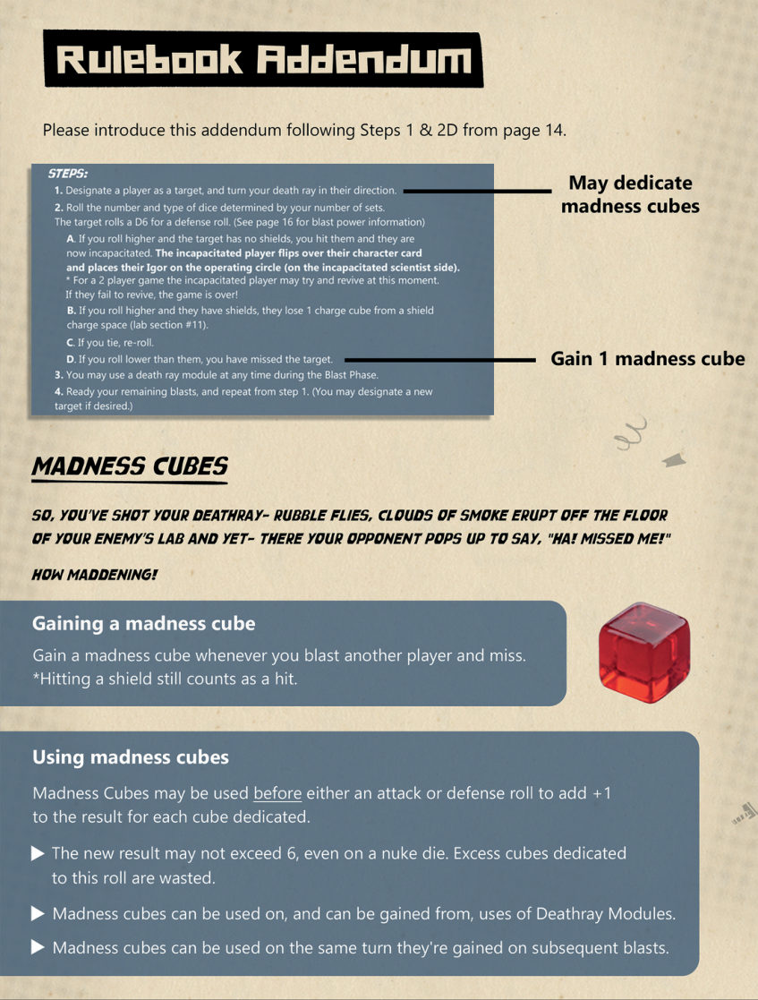
5.3 实验室阶段（Lab Phase）
拉下操纵杆，让你的机器实现你的疯狂计划！
步骤
- 将便携电池翻到你选择的资源面，然后把它放到任意装置区 1–9 中。
- 掷 2 颗实验室骰子，并将它们分配到合适的实验室区域和/或银行槽中。这将激活掷出区域以及其左侧所有区域中的卡牌与资源。
- 你可在实验室阶段任意时刻使用区域 10 与区域 12 中的充能方块。
便携电池
把电池翻到你想产出的资源面，然后放到所选装置区下方的资源图标上（1–9）。电池不能放在机械区 10、11、12。
在实验室阶段，电池所在区域无论是否被骰子掷中都会被激活：(A) 提供其朝上面的资源，代替该区域通常产出的资源，并激活该区域的卡牌（若有）；(B) 若你的实验室掷骰也激活了该区域，不会再次激活。
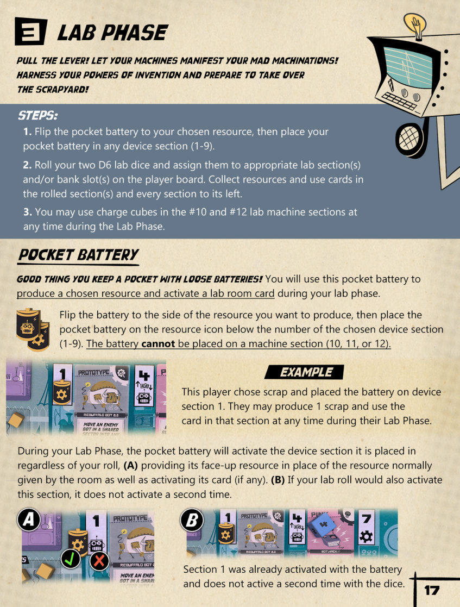
分配实验室骰子
若 伊戈尔 在栖木上，你在分配骰子时可重掷一颗或两颗骰子一次。
将掷出的骰子分配到银行槽和/或实验室区域，数值需对应。
分配方式包括：
- 1 颗骰子到一个实验室区域，另 1 颗到另一个不同的实验室区域；
- 1 颗骰子到一个银行槽，另 1 颗到一个实验室区域；
- 1 颗骰子到一个银行槽，另 1 颗到另一个不同的银行槽；
- 2 颗骰子到同一个实验室区域（点数相加）。
分配骰子时，可以拆分或相加：
- 拆分：每颗骰子分别放到与面值相同的实验室区域或银行槽。
- 相加：两颗骰子点数相加，放到总和对应的实验室区域。
每颗骰子可独立分配到实验室或银行。分配到实验室的骰子要么以组合值激活，要么以拆分值激活；分配到银行的骰子不激活实验室，而是把一颗未激活或可部署机器人放到与骰子面值相同的银行槽中"持有"该数值，直到使用。
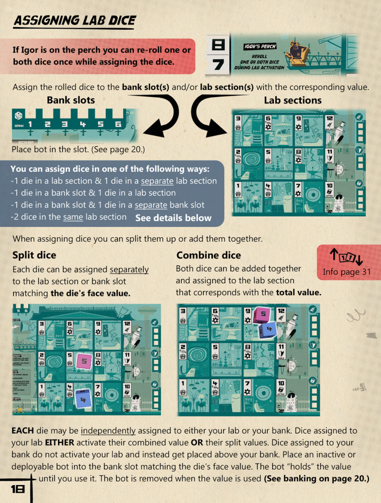
分配到实验室区域
将骰子放到实验室区域会激活该区域及其左侧所有区域的卡牌与资源。增强卡不会被骰子激活。
在已激活区域中收集资源：
- 机器人（区域 1–5）：将 1 个机器人从未激活区移到可部署区。
- 废料（区域 6–9）：将废料计数器在废料轨上向上移 1 格。
- 充能方块（区域 10–12）：将 1 个充能方块放到该区域右侧的充能格中。你在同一实验室阶段即可使用它。
使用已激活区域的卡牌时，顺序任意，也可以选择不使用。
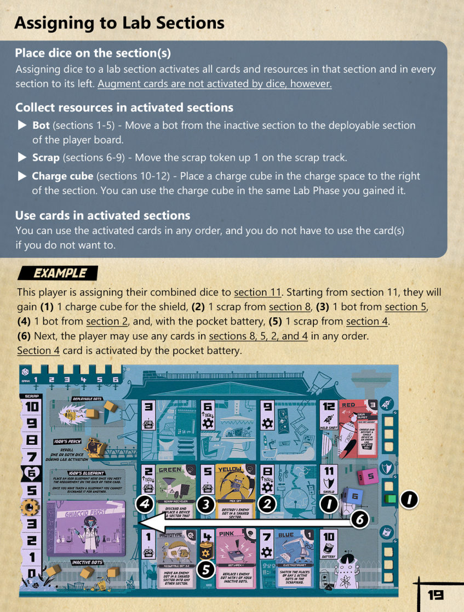
分配到银行槽
将骰子和机器人分配到银行槽会储存该骰子的数值。之后你可以用它替换某次掷骰的骰面（用于战斗、废料场区域激活或实验室掷骰），或加到实验室掷骰的总值中。
充能方块
实验室阶段可使用区域 10 与 12 中的充能方块。移除 1 个充能方块以使用该区域的特殊能力：
- 区域 12 — 狂野射击（Wild Shot）：射击对手的实验室，掷 2D6 命中对应编号区域；若有卡，将其摧毁并弃除。不需要激活的死亡射线。
- 区域 11 — 护盾（Shield）：被轰击命中时移除 1 个护盾充能以抵消失能。
- 区域 10 — 电池（Battery）：使用实验室中任意一张本阶段尚未使用过的卡牌。
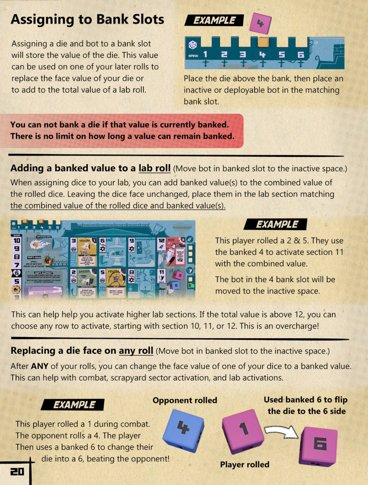
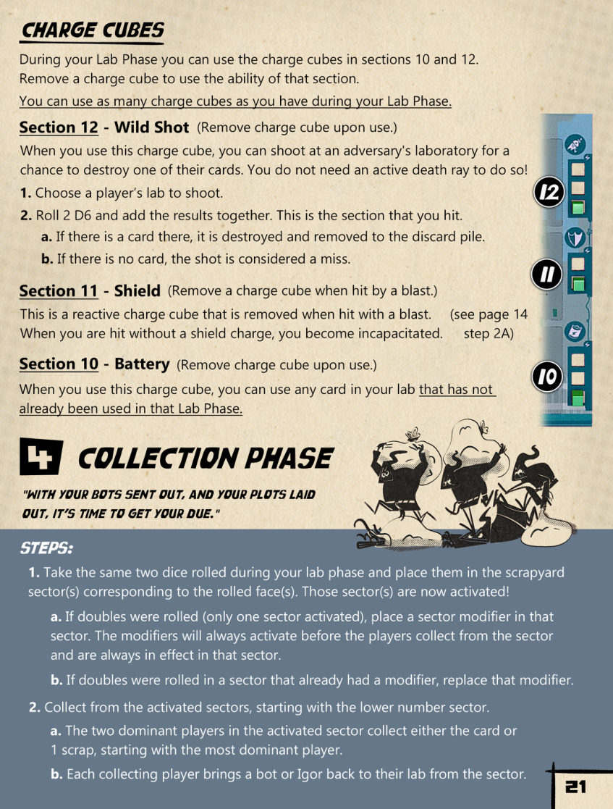
5.4 收集阶段（Collection Phase）
机器人已经派出，布局已经设好，是时候收获回报了。
步骤
- 拿取你在实验室阶段掷出的两颗骰子，将它们放到废料场上与点数对应的区域。这些区域被激活！
- 若掷出对子（只激活一个区域），在该区域放置 1 个区域修正板块。修正板块在玩家收集前生效，且始终在该区域生效。
- 若对子区域已有修正板块，则替换它。
- 从编号较小的区域开始收集。
- 每个已激活区域中，最主导的玩家可先选择拿取卡牌 或 获得 1 废料；第二主导的玩家拿取前者没拿的另一项。
- 每位收集的玩家必须从该区域召回 1 个机器人或 伊戈尔 回到自己的实验室。机器人回到未激活机器人区；伊戈尔 回到 伊戈尔 栖木。
区域主导权
某区域中机器人最多的玩家为最主导玩家；伊戈尔 在计算主导权时相当于 0.5 个机器人。若平局，从当前行动玩家开始顺时针，每位平局的玩家掷 1D6，点数高者视为更主导。
收集卡牌
拿卡牌需要废料！按卡牌右上角标注的价格降低你的废料计数器，然后从该区域召回 1 个机器人或 伊戈尔。
装置卡进入实验室任意一行最左侧的空装置区。增强卡则放到对应的机械区 10、11 或 12，并获得 1 个该区域的充能方块。
收集废料
选择收集废料时，从该区域召回 1 个机器人或 伊戈尔，并将废料计数器向上移 1 格。
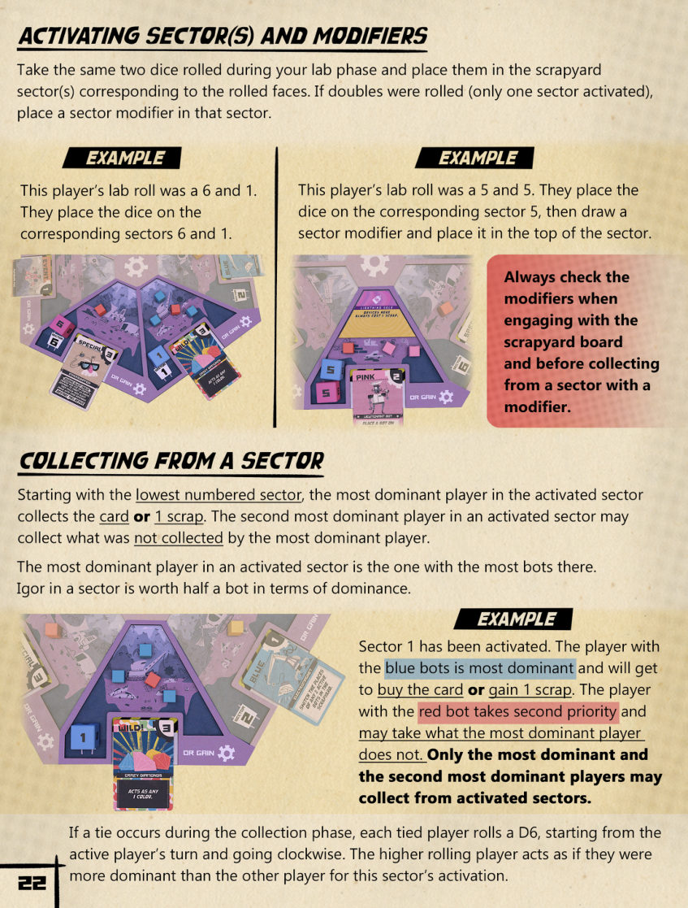
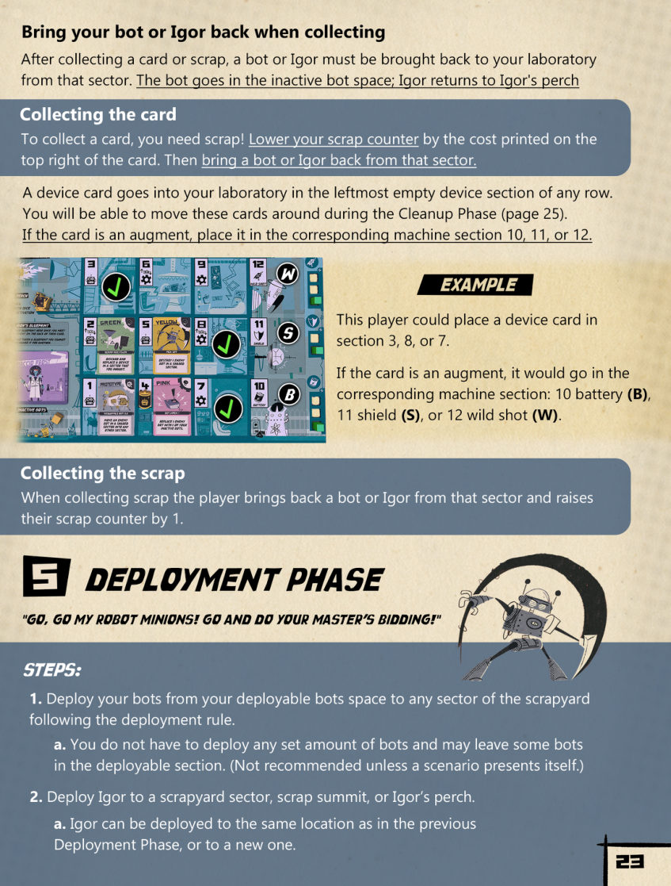
5.5 部署阶段（Deployment Phase）
“去吧，我的机器人仆从！去执行主人的命令！”
步骤
- 将你的机器人从可部署区部署到废料场的任意区域，遵循部署规则。
- 你不必部署固定数量，也可以让部分机器人留在可部署区（除非场景需要，否则不推荐）。
- 将 伊戈尔 部署到废料场区域、废料顶点或 伊戈尔 栖木。
- 伊戈尔 可部署到与上次部署阶段相同的位置，也可部署到新位置。
部署规则
你只能在部署后能成为该区域主导（机器人数量最高）的区域部署机器人。伊戈尔 在主导权中计为 0.5 个机器人，但 伊戈尔 本身不受部署规则限制。
部署 伊戈尔
- 伊戈尔 栖木：你的下一次实验室阶段可重掷一颗或两颗骰子。
- 废料顶点：立即将废料计数器向上移 1 格。伊戈尔 会留在顶点直到你的下一个部署阶段；若再次部署到顶点，再次获得 1 废料。
- 废料场区域：伊戈尔 可放到任意区域，不受部署规则限制。伊戈尔 在区域中算 0.5 个机器人的主导权，并可以像机器人一样收集。若从区域（非顶点）收集，伊戈尔 回到 伊戈尔 栖木。
伊戈尔 免疫所有影响机器人的效果。
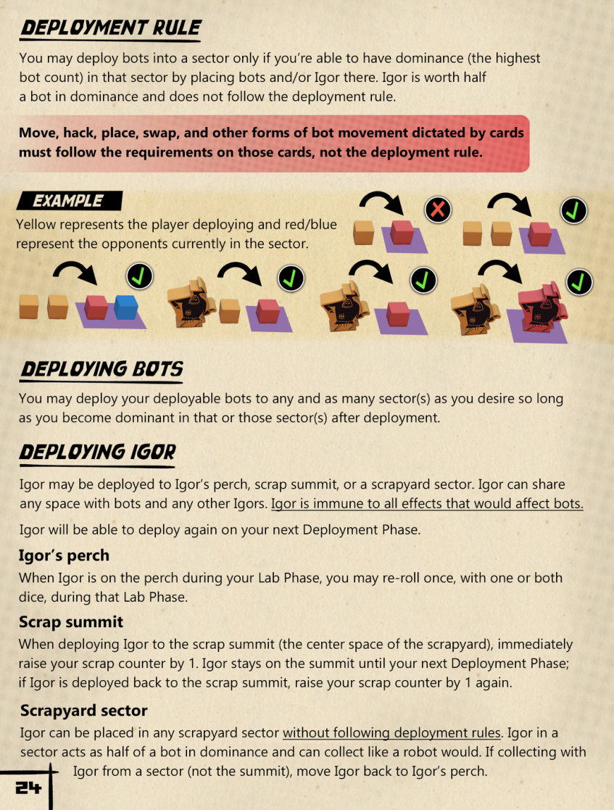
5.6 整理阶段（Cleanup Phase）
“一天结束时：捏脚趾一百次、刷牙，然后为新一天的统治做好准备。”
- 从编号最低到最高的区域，用游戏牌库补充废料场中所有空的区域卡牌槽。
- 若抽到“抽到即触发”的事件卡，立即结算，然后继续补充空槽。
- 补充完毕后，玩家起始标记传给左手玩家，由其开始下一回合。
- 你可以交换实验室装置区中任意两张卡的位置一次。
- 检查你的原型卡是否满足升级条件。
游戏结束
当除一名科学家外，其他所有科学家都失能时，游戏结束。最后站立的疯狂科学家获胜！
附加规则
多人参与顺序（Multiple Involvements）
当多于一名玩家需要结算同一事件（包括平局与事件卡）时，从当前行动玩家开始顺时针结算。请注意，一回合要到整理阶段结束后才算结束。
如果多个废料场区域卷入同一事件，优先结算编号较小的区域，除非卡牌指定由玩家自行选择。
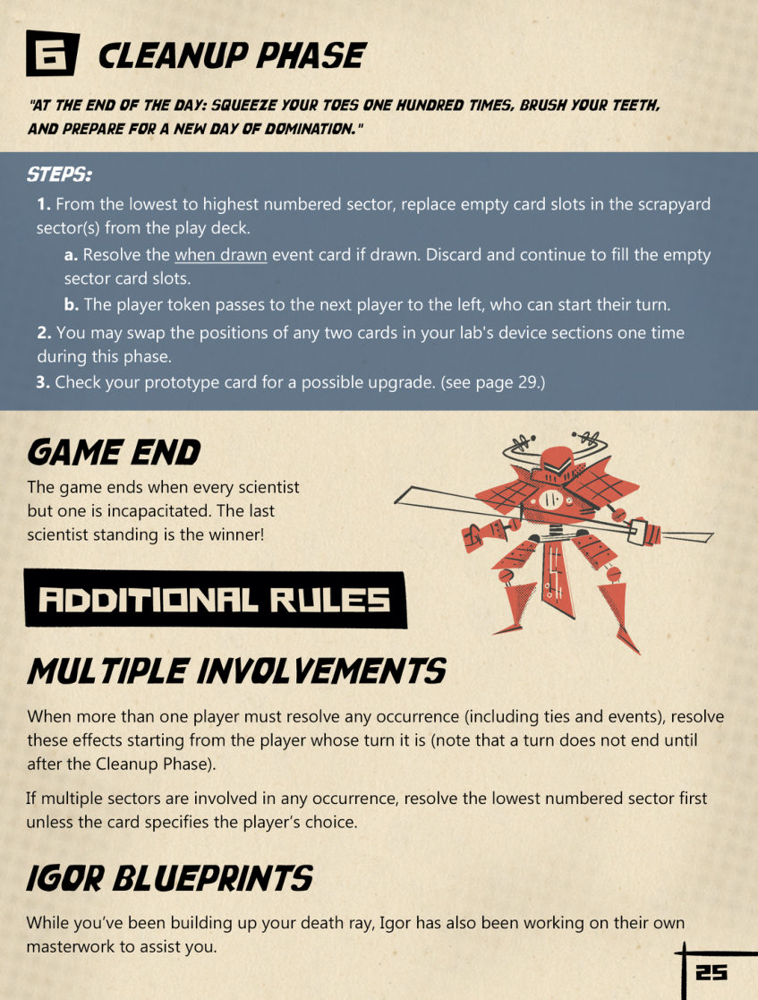
6死亡射线升级
颜色套装类型
可凑成的套装类型有：
- 3 张同色
- 4 张同色
- 4 张不同色
- 5 张不同色
同一张卡可以作为不同类型套装的一部分，但不能在同一类型中重复计算。特殊卡、事件卡、原型卡不计入颜色。颜色显示在卡牌的左上角。
获得与失去套装
获得新套装时：
- 在武器板对应的套装图标上放 1 个套装方块。只要该套装的卡仍在实验室中，方块就保留。
- 抽 1 张死亡射线模块卡，放到武器板右侧。
失去套装中的卡时（除非实验室中另一张卡补全了该套装）：
- 从武器板对应套装图标上移除套装方块。
- 选择 1 个死亡射线模块，洗回模块牌库。
轰击威力
死亡射线威力随套装增加而提升，增加骰子、重掷次数，并最终使用更强大的核弹骰。
- 简单轰击：拥有 1 个套装时，每次轰击掷 1 颗 D6。
- 超级轰击：拥有 2 个套装时，每次轰击可分别进行两次轰击，每次掷 2D6，只取较高值作为攻击值。
- 核弹轰击：拥有 3 个或更多套装时，所有轰击都使用核弹骰（D12）。原子符号计为 2 次不可阻挡的命中！
轰击次数：你的轰击阶段可以进行与武器板上套装方块数量相同的轰击次数。每次轰击的目标可以与上次相同或不同。
模块数量：你拥有的模块数量等于你的套装数量。模块可在轰击阶段任意时刻使用，同一次轰击阶段中每个模块不能使用超过一次。模块使用后保留；只有失去完整套装时才会失去模块。
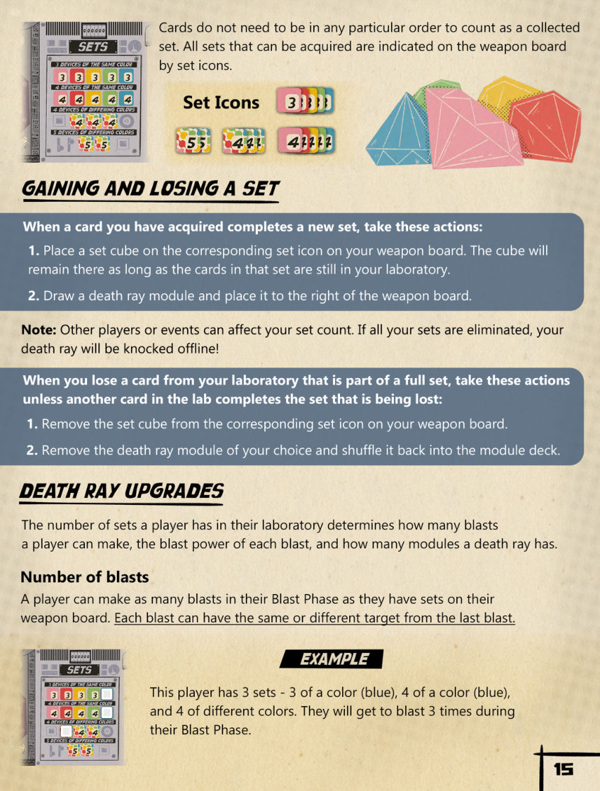
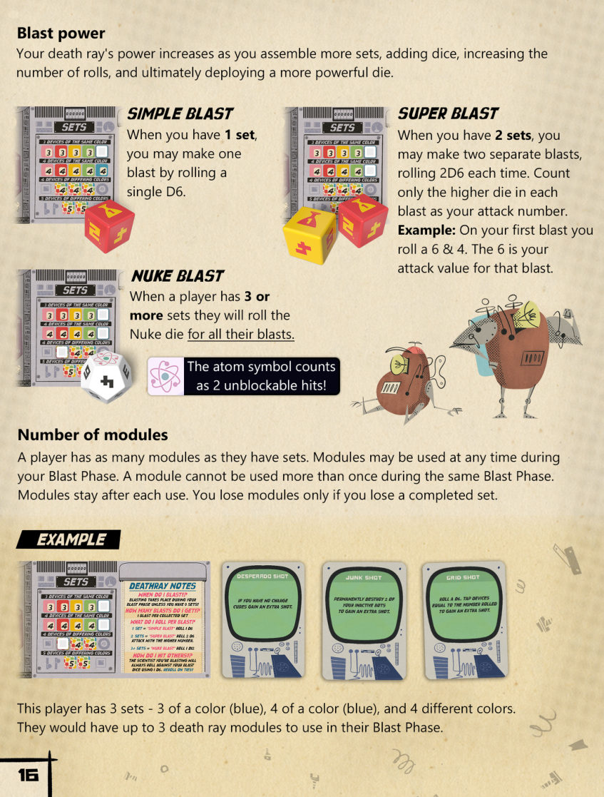
7卡牌类型
基础装置卡（Basic Device Cards）
在实验室阶段被激活时可使用。某些卡带有连击（Combo）效果：当第二张同色卡牌正交相邻（非对角）于带有连击能力的卡时，可触发额外效果。
独特装置卡（Unique Device Cards）
带有“获得即触发（when acquired）”效果的装置卡。效果结算后，该卡不会在实验室中激活，但仍可作为套装颜色使用。每种颜色在牌库中只有 1 张！
增强卡（Augment Cards）
增强你的电池（区域 10）、护盾（区域 11）或狂野射击（区域 12）。获得时放到对应机械区，并获得 1 个该区域的充能方块。增强卡会改变该区域充能方块的能力；你仍可使用充能方块的基础能力，但不能在同一充能方块上同时使用基础和增强能力。
进阶装置卡（Advanced Device Cards）
进阶卡能增加玩家互动和策略深度。进阶卡无需激活即可使用！每张卡会写明使用时间；若未指定时间，则在实验室阶段使用。许多进阶卡需要横置（Tip）（将卡旋转 90°）来触发能力；再次使用前必须先恢复（Untip）（旋转回正）。横置的卡可通过「用骰子激活」或「用便携电池激活」来恢复。横置和恢复的当回合不能再次使用同一张卡。进阶卡两侧有星号标记。
万能装置卡（Wild Device Cards）
被激活时没有任何效果，但可以帮助你组成颜色套装。获得时宣言其颜色；你也可以在你的回合开始时重新宣言其颜色以组成不同套装。
起始装置卡（Starter Device Cards）
分为 4 叠，每叠 3 张，背面图案不同。设置时玩家选择一叠。3 人以上游戏使用整叠；2 人游戏只使用标有 “2/3/4” 的两张。四类起始叠分别为：Barraging（破坏）、Rushing（机动）、Producing（生产）、Controlling（控制）。
事件卡（Event Cards）
分为“抽到即触发（when DRAWN）”和“获得即触发（when ACQUIRED）”两种，在指定时机立即结算。事件卡不计入颜色套装。
特殊装置卡（Special Device Cards）
每张都有独特的一次性效果；使用后离开你的实验室。它们不计入颜色套装。
原型卡（Prototype Card）
游戏开始时就在你实验室中的卡，从 1.0 面开始，可通过使用升级。每次激活后，在卡上放 1 个充能方块以记录进度。激活并添加充能方块后，你可以选择不使用该装置。达到指定次数后翻面升级。原型卡不计入颜色套装。
死亡射线模块卡（Death Ray Module Cards）
大多数模块提供在轰击阶段获得额外轰击的可选方式；少数会指定特定玩家为目标，使用时将对应的模块指示物放在目标玩家的版图上方。标有“Before First Blast”的两个模块必须在进行任何轰击前使用。
不喜欢当前模块？在轰击阶段前，支付 2 废料抽 2 张模块并选择 1 张替换当前模块；只要负担得起，可重复多次。
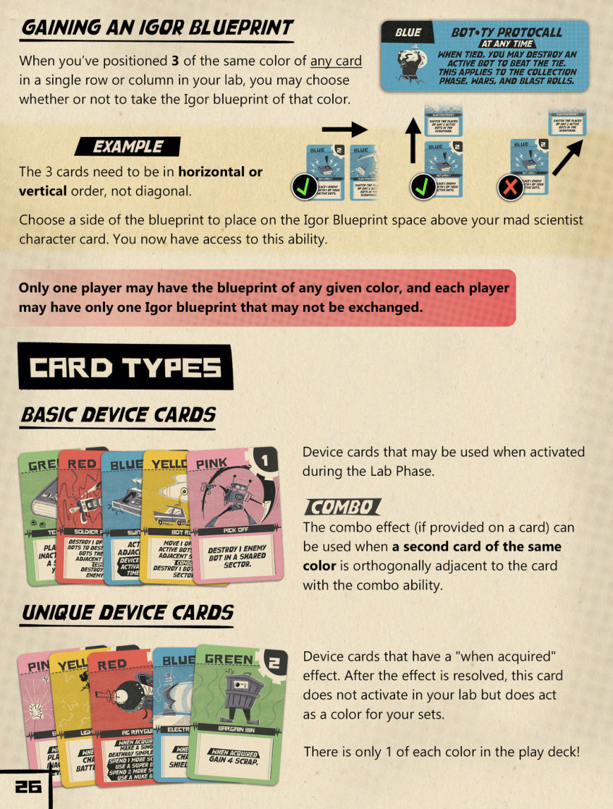
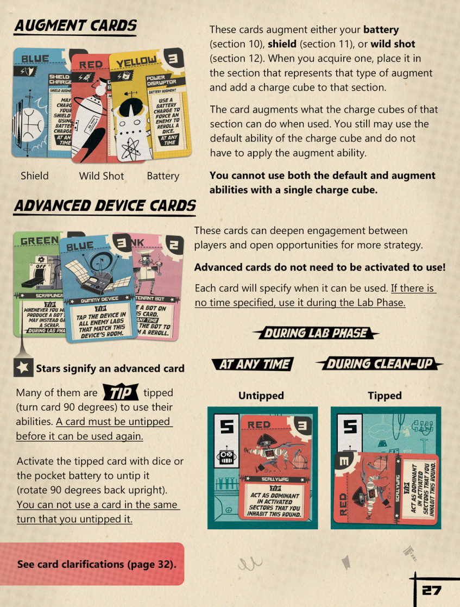
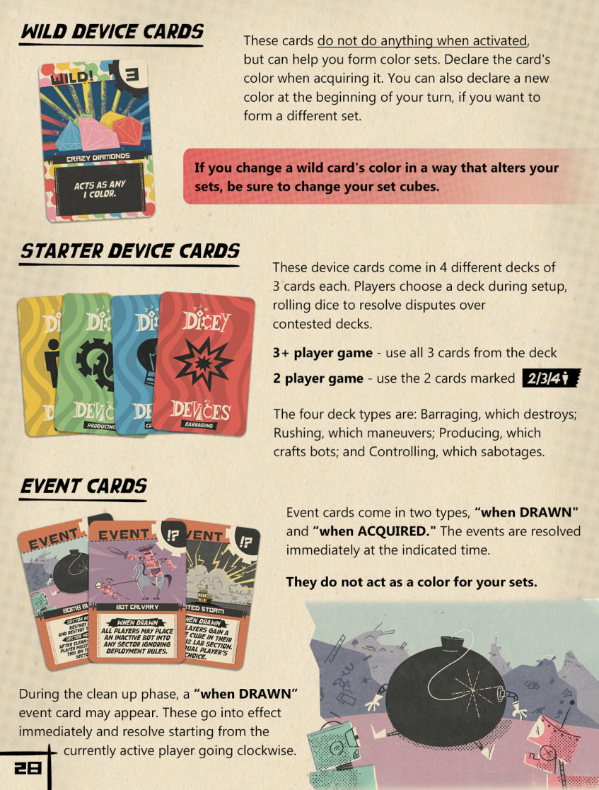
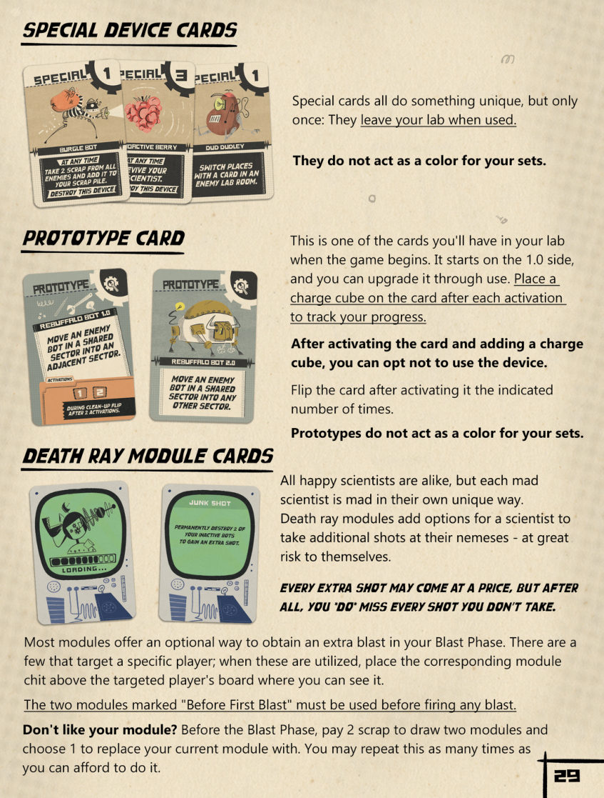
8Igor 蓝图
当你在自己的实验室中，将任意 3 张同色卡牌在同一行或同一列排成一线（横或竖，不能对角）时，你可以选择是否拿取该颜色的 伊戈尔 蓝图。
选择蓝图的一面，放到疯狂科学家角色卡上方的 伊戈尔 蓝图位。你现在可以使用该能力。
9术语与符号
- 激活的（Active）
- 在废料场中或在玩家版可部署区里的机器人。
- 激活（Activate）
- 按卡牌说明结算装置或区域的效果。
- 相邻（Adjacent）
- 实验室区域或废料场区域共享完整边（非仅角接触）。
- 任意时刻（At any time）
- 任何阶段均可，即使不是你的回合。
- 攻击（Attack）
- 用死亡射线射击。
- 攻击者（Attacker）
- 用死亡射线射击你的科学家。
- 充能（Charge [to full]）
- 在指定区域（10、11 或 12）获得充能直到满；超出部分弃除。
- 收集（Collecting）
- 从废料场拿取废料或购买装置。
- 连击（Combo）
- 与一张同色装置卡相邻时触发的额外效果。
- 部署规则（Deployment Rule）
- 向废料场区域放机器人时，你必须比该区域任何其他玩家放得多。
- 摧毁（Destroy）
- 将一个激活的机器人移回其拥有者玩家版的未激活区。
- 主导（Dominant）
- 废料场某区域中机器人最多的玩家。
- 获得（Gain）
- 获得指定的资源、装置等。
- 未激活的（Inactive）
- 在玩家版未激活区里的机器人。
- 占据（Inhabit）
- 占据一个实验室区域或废料场区域。
- 执行（Perform）
- 执行指定行动。
- 永久摧毁（Permanently Destroy）
- 将目标机器人从游戏中移除，不移回玩家版。
- 生产（Produce）
- 将玩家版未激活区的 1 个机器人放到可部署区。
- 放置（Place）
- 将物件放到指定空间。若机器人进入废料场区域，不视为移动或部署；若是事件，不弃除其下方的装置。
- 重排（Rearrange）
- 改变装置区卡牌的位置；每行仍需从左到右填满。
- 区域（Sector）
- 废料场版图上标有 1–6 的空间。
- 共享（Shared）
- 有多个玩家机器人占据的区域。
- 交换（Switch）
- 让两个不同废料场区域的机器人互换位置。
符号说明
- ⚙ 废料：获得 1 废料
- 🤖 机器人：获得 1 个机器人
- 🚀 狂野射击：获得 1 个狂野射击充能
- 🛡 护盾：获得 1 个护盾充能
- 🔋 电池：获得 1 个电池充能
- ♥ 复活：提醒你可以花 6 废料复活
- ↕ 对子符号：当该区域被对子激活时，可选择激活上下装置区而非左侧所有区域
- 💡 控制型起始叠
- 👥 机动型起始叠
- ⚙❓ 生产型起始叠
- 💥 破坏型起始叠
- 🔍 原型卡
- ⁉ 抽到即触发事件卡
- ★ 进阶卡
- ⚡ 获得时获得狂野射击充能
- ⚡🛡 获得时获得护盾充能
- ⚡🔋 获得时获得电池充能
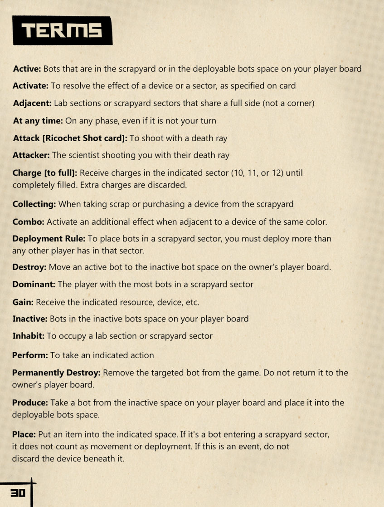
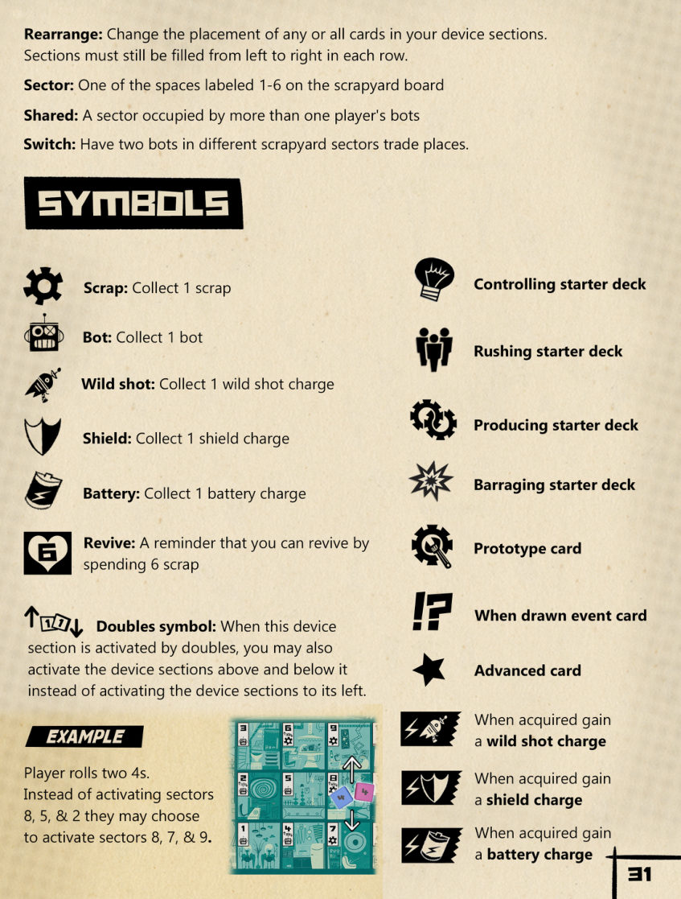
10常见问题
- 当对手摧毁或移除我的机器人时，它去哪？
- 未激活机器人区。
- 卡牌或资源能否被双重激活？
- 除非卡牌明确允许，否则不能。
- 能否在同一回合用电池恢复一张刚被激活过的卡？能否使用刚用电池恢复的卡？
- 都不行。横置或恢复一张卡视为激活该区域，且该动作算作使用了装置。
- 掷出对子时，废料场区域会激活两次吗？
- 不会。
- 能否替换机械区 10–12 的增强卡？
- 可以，用新购买的增强卡替换旧的并弃除旧卡。
- 装置区 1–9 满了怎么办？
- 购买卡牌时，选择实验室中的一张卡弃除以腾出空间。
- 购买的卡必须立即放置吗？
- 是的，决定购买就必须立即放置。
- 没有卡牌的已激活实验室区域也要收集资源吗？
- 是的。
- 必须部署 伊戈尔 吗？何时收回？
- 不必。部署阶段你可以让 伊戈尔 留在原地，并在下次部署阶段再次获得该位置的好处。
- 战斗中可以多次改变骰面吗？
- 可以。
- 能否把可部署机器人当作未激活机器人使用？
- 可以。若没有未激活机器人可用于某个行动，你可以改用可部署机器人。
- 实验室阶段获得的装置能在同一实验室阶段激活吗？
- 可以，只要放置它的区域本回合尚未被激活。每个区域每回合只能激活一次。但若某装置是用已激活区域的资源获得的，只要该区域内本阶段没有装置被使用过，你仍可使用放入该区域的装置。
- 掷两颗骰子时储存一颗，能立即加到另一颗上吗？
- 不能。但实验室阶段通过装置获得的银行值，仍可在尚未用骰子激活任何区域之前，用于替换或加到实验室骰子上。
卡牌澄清
- Amp Clamp
- 该装置不能把掷出骰子的点数翻倍超过 6，但可以把银行值加入累计实验室掷骰时翻倍（例如把银行中的 5 加到实验室掷骰中变为 +10）。
- Bomb Buddies
- 任何人都可以把任意数量自己的机器人从该卡所在区域移到这张卡上，无视主导权。
- Crazy Diamonds
- 每张 Crazy Diamonds 每回合可指定一种颜色，但整回合保持该颜色。例如，若你在轰击阶段用它凑成 3 张蓝色套装，实验室阶段它也必须保持蓝色。
- Dud Dudley
- “交换位置”指被移除的装置进入 Dud Dudley 所在的区域，而 Dud Dudley 进入该装置原来所在的区域。
- Electromagnet
- 以此方式交换机器人算作移动。
- Hack
- 被骇入的机器人不视为被摧毁或移动；它只是从废料场移除并回到拥有者的未激活区。
- Impersonation
- 相当于你进行两个轰击阶段：一次用对手的死亡射线，一次用你自己的（若你的已激活）。
- Power Disruptor
- 该效果可在任意时刻使用，每次使用消耗 1 个充能。
- Radioactive Berry
- 最后一人失能后你仍可激活该浆果。
- Working Remote
- 可用于激活你在实验室阶段获得并放入已激活区域的卡牌。
- Kawamiri log
- 部署 3 个机器人前不需要召回机器人。
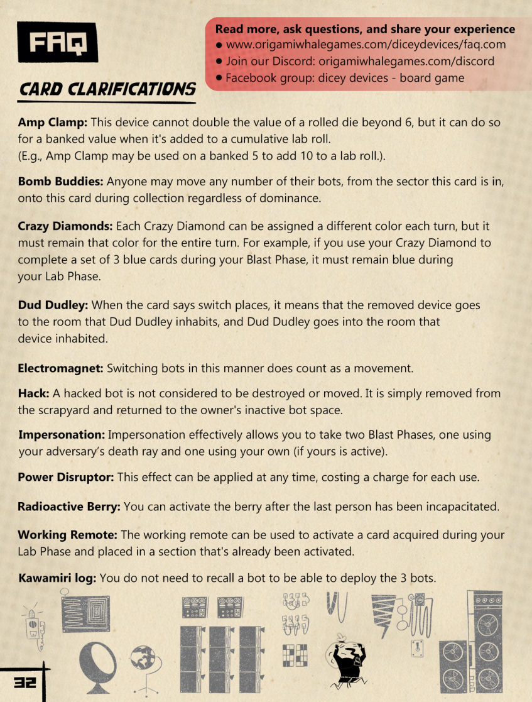
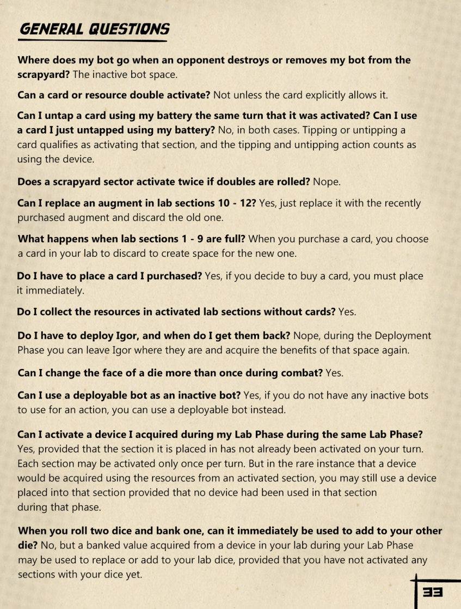
11提示与变体
有用提示
- 若用银行骰子将累计实验室掷骰提升到 12 以上，你可以激活任意一行！（第 20 页）
- 不喜欢当前死亡射线模块可支付 2 废料更换，次数不限。（第 29 页）
- 获得增强卡时会获得对应区域的 1 个充能方块！（第 27 页）
- 合理使用银行非常强大。（第 20 页）
变体模式
- 伟大机器人战争：不用起始叠与 1 张原型卡，改为开始时拥有 2 张原型卡且无起始叠。
- 放射性模式（区域修改变体）：放置区域修正板块时，同时在该区域左右两侧两个区域也放置修正板块。
- 战术公爵：判定主导权时，若多个玩家在某区域机器人数量并列最多，则这些玩家都无法收集；由机器人数量次高的玩家收集。若全部并列，则该区域无人收集。
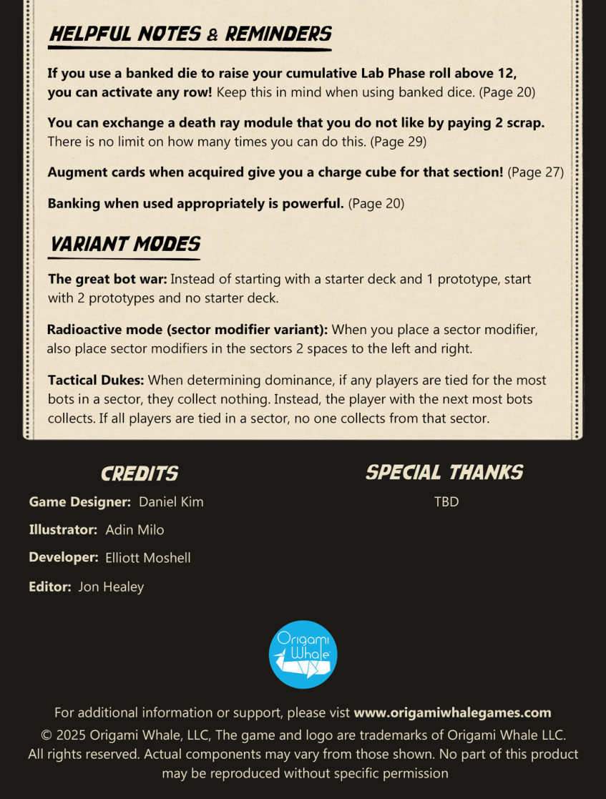
12制作人员
游戏设计：Daniel Kim
插画：Adin Milo
开发：Elliott Moshell
编辑：Jon Healey
发行：Origami Whale, LLC
更多信息：www.origamiwhalegames.com
© 2025 Origami Whale, LLC. 游戏与标志均为 Origami Whale LLC 商标。实际组件可能与图示不同。未经明确许可，不得复制本产品任何部分。